Quotify
QuotifyQuotify 2 Press Kit
Your personal library for the quotes that move you, shown back to you every day on your Home Screen.
Quotify is your personal library for the words that move you. Save quotes from books, articles, podcasts and conversations, then see them again every day on your Home Screen and Lock Screen. Quotify 2 is the biggest update since launch: it makes saving a quote effortless and seeing it again more personal.
Facts
| App | Quotify: Save Your Quotes |
|---|---|
| Version | 2.0 |
| Price | Free for up to 25 quotes. Quotify Premium: Monthly or Annual, each with a 1-week free trial, or a one-time Lifetime purchase |
| Platforms | iPhone and iPad; ready for iPhone Duo |
| Privacy | No account needed. Premium sync uses your own iCloud |
| App Store | apps.apple.com/app/id1626937020 |
| Developer | Jay Hickey, solo developer, Final Bits LLC |
| Press contact | quotify@finalbits.io |
What's new in Quotify 2
- Smart Photo to Quote, free for everyone: take or choose any photo, like a book page, sign or screenshot, and Quotify pulls the quote and author
- A fresh new design built on Liquid Glass, with cleaner quote rows. Tap a quote to share it, or swipe and long-press for quick actions
- Pick which quotes your widgets and reminders show, like just your Favorites, a single author or any field you've added (Premium)
- Organize quotes with your own fields, then filter or sort your library (custom fields are Premium; Favorites is free)
- Your own photo behind widgets and share images (Premium)
- Widgets look right on tinted and clear Home Screens, and Text Size now changes the quote size
- A new Share Quote sheet with Story, Square and Wide images, an accent color, and straight-to-Instagram Stories sharing
- Multiple daily reminders at the times you choose, now with the author (Premium)
- Spotlight, Siri and Shortcuts support
- Saved links show as a website name you can tap to open
- Ready for iPhone Duo
- iCloud sync status in Settings, and replay the welcome tour anytime
App icon

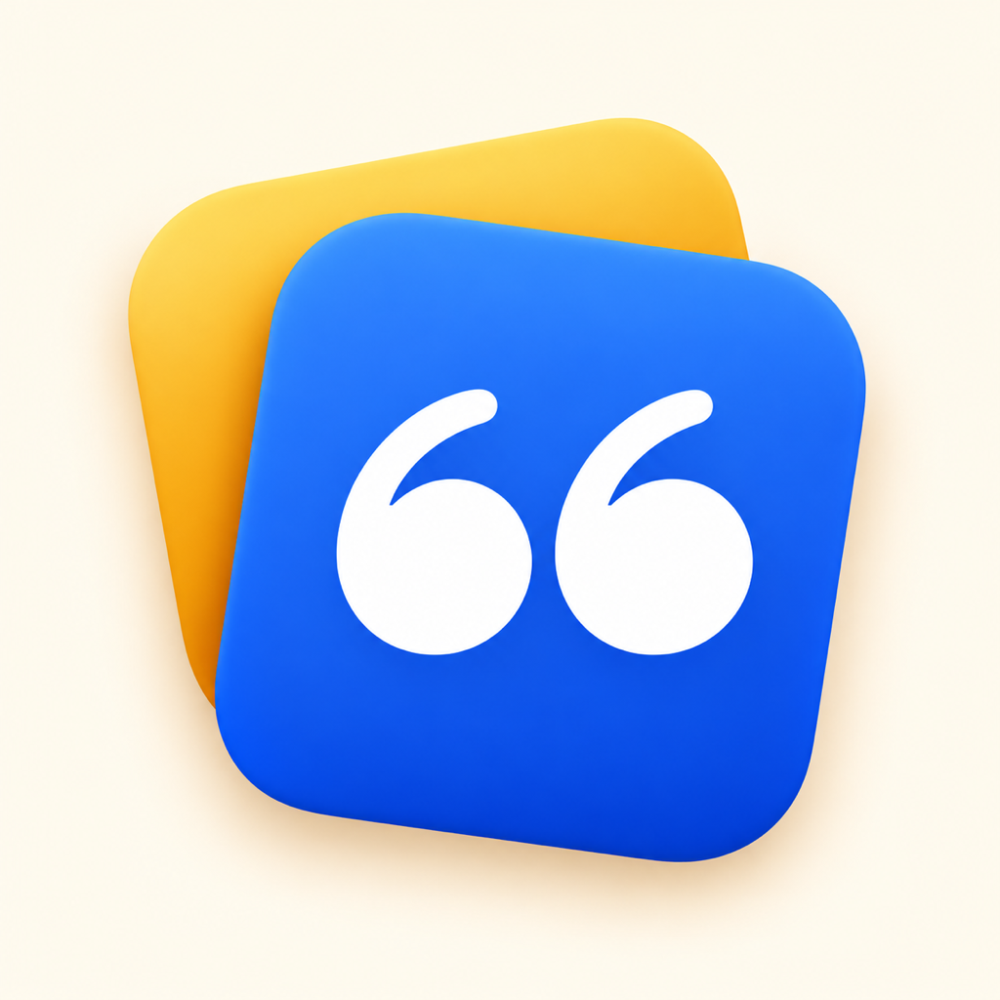
App Store screenshots
The seven Quotify 2 App Store screenshots for iPhone and iPad, in order. Tap to download.
iPhone (1320 × 2868 PNG)

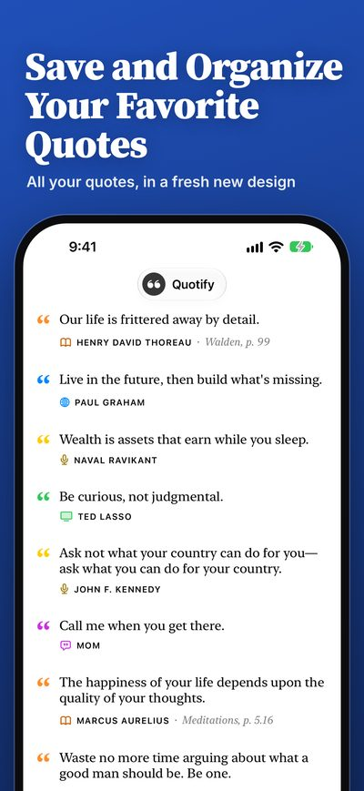

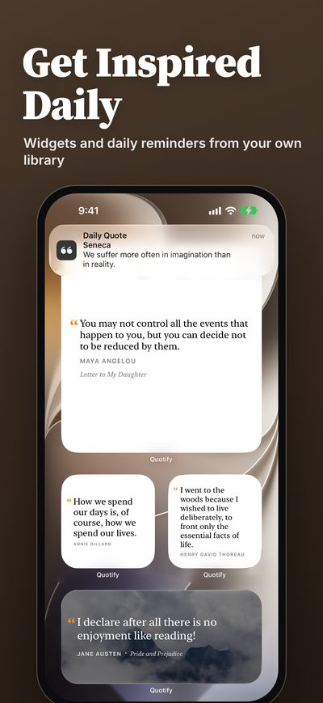

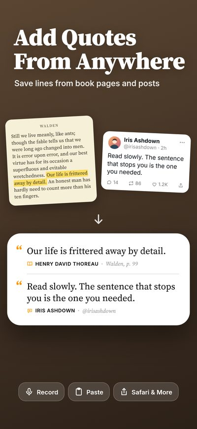

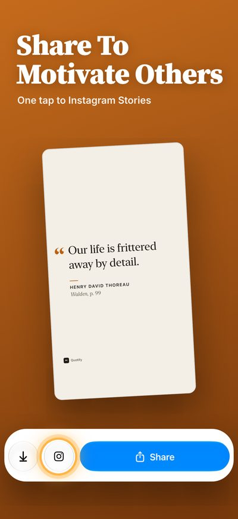

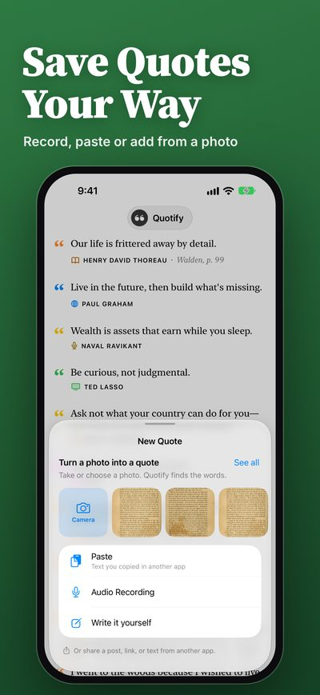

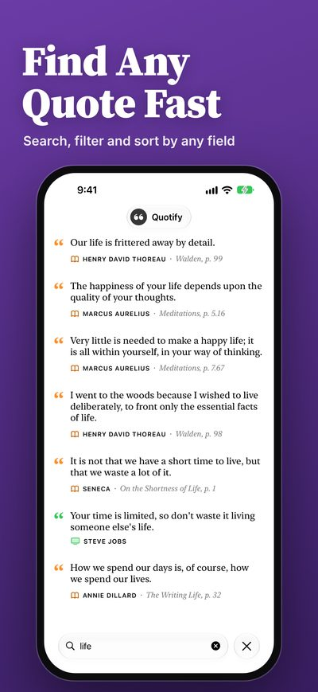

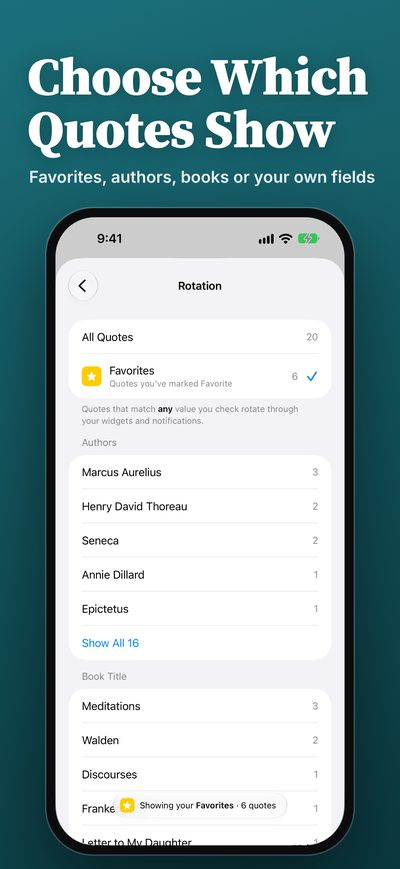
iPad (2064 × 2752 PNG)

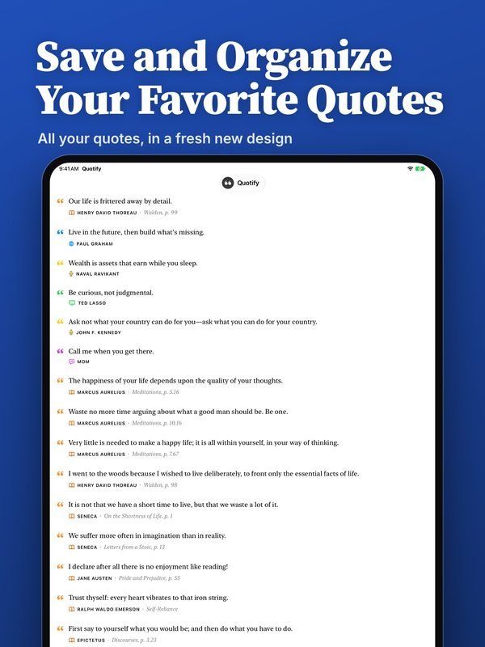

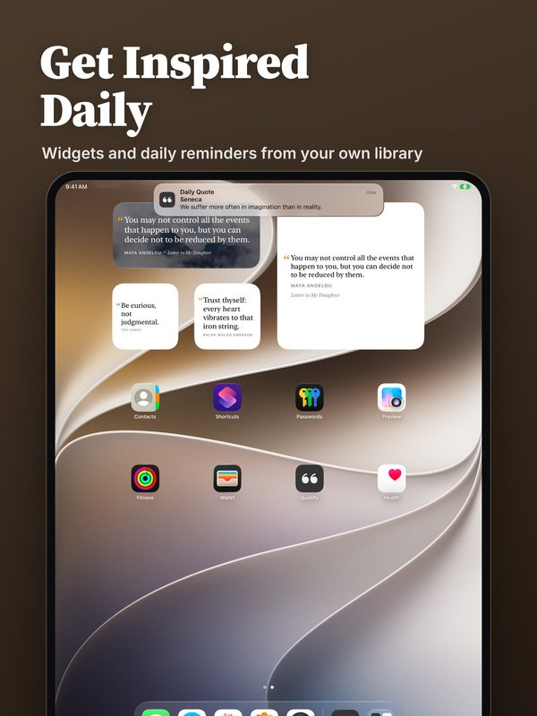

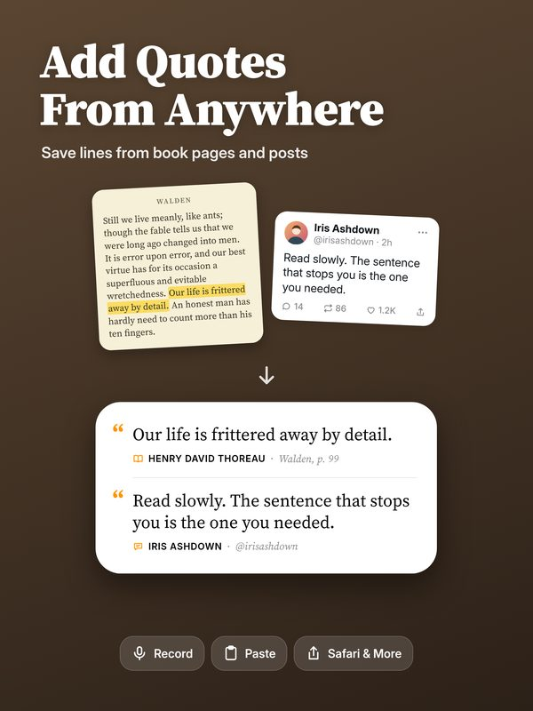

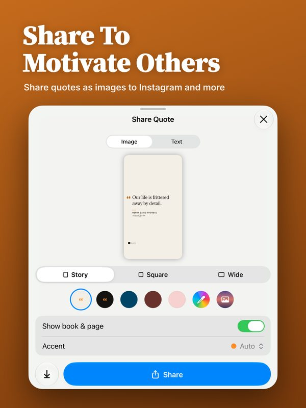

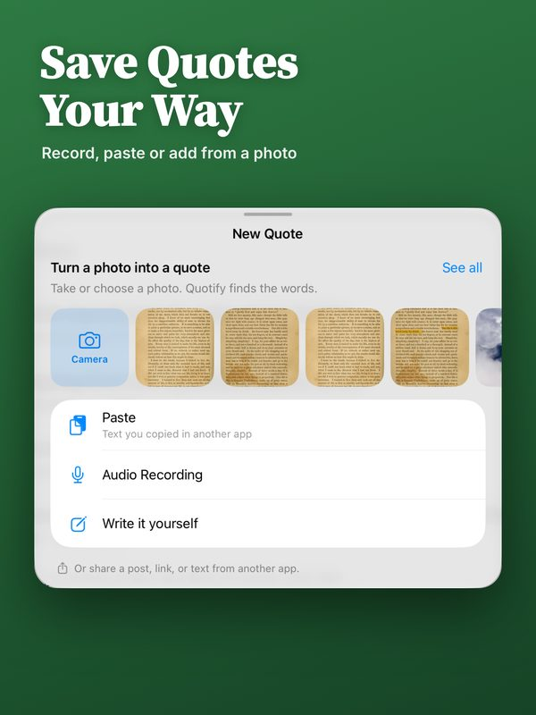

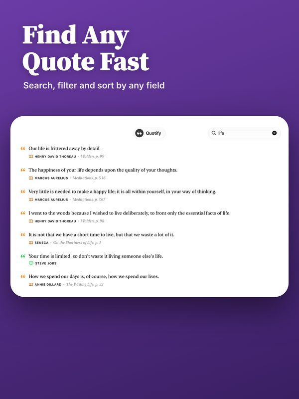

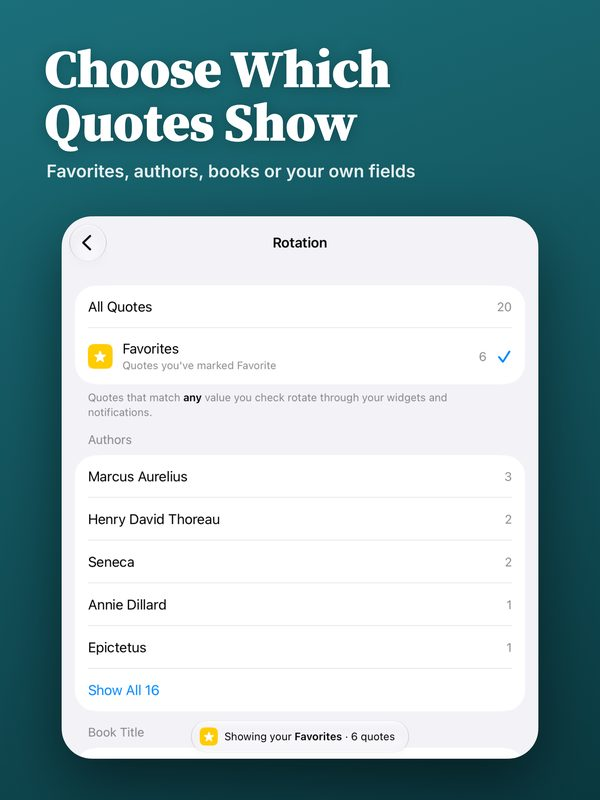
In-app screens
iPhone screens at full resolution (1206 × 2622 PNG). Tap to download.

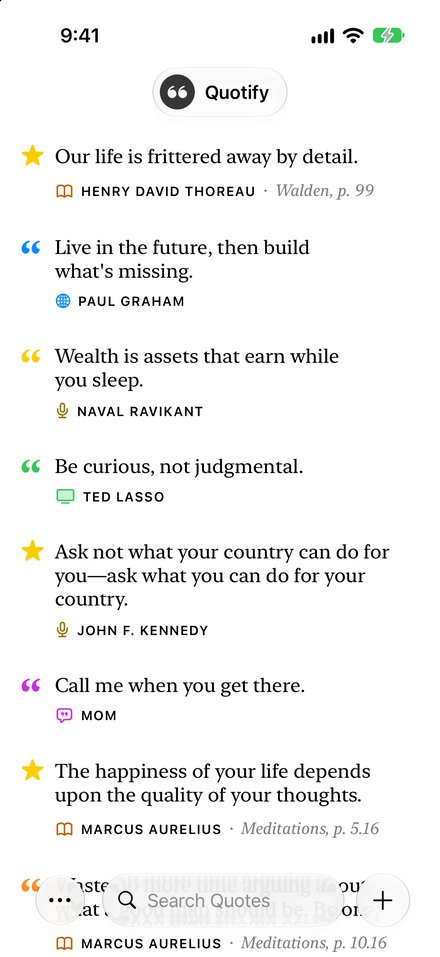

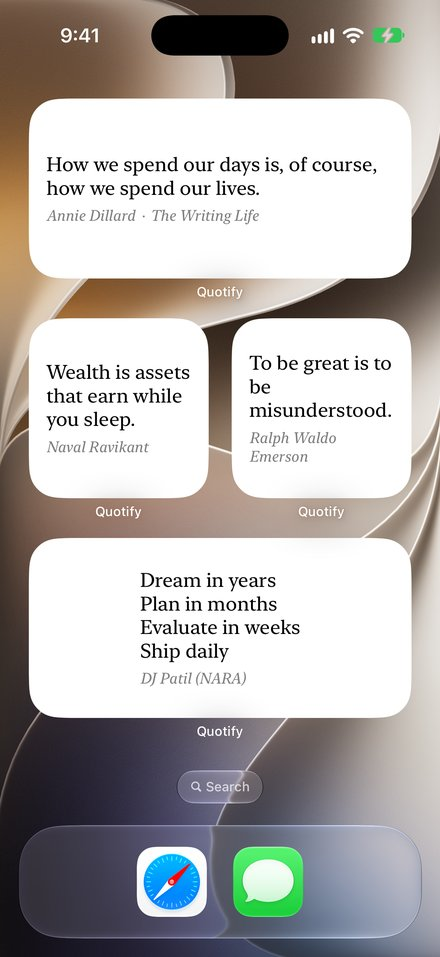

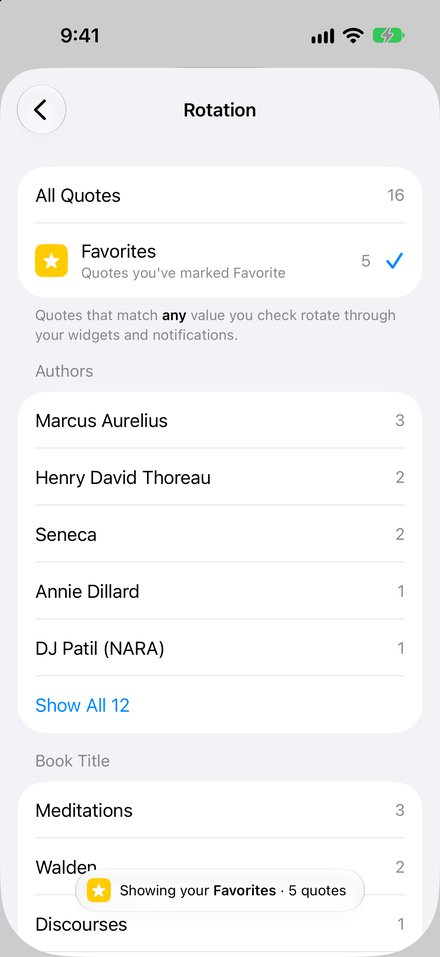

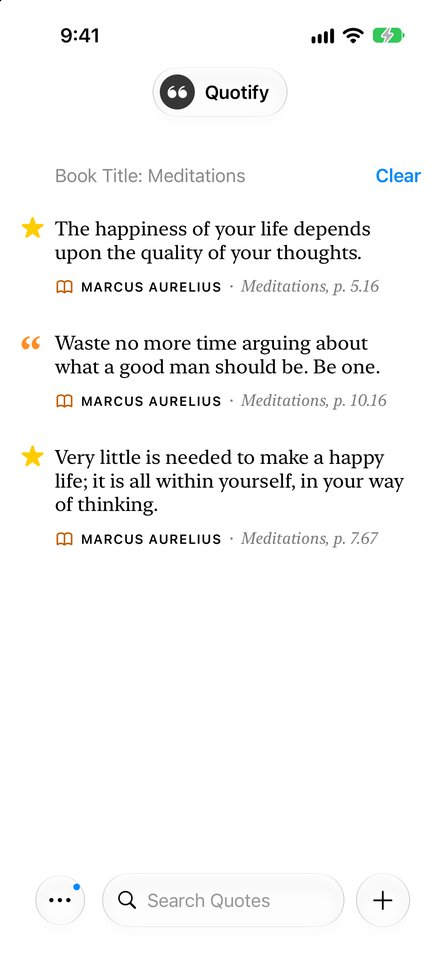

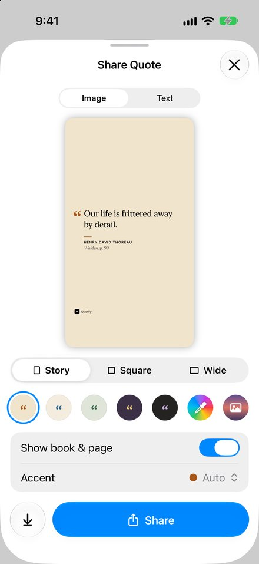
About the developer
Quotify is made by Jay Hickey, a solo developer, under Final Bits LLC.